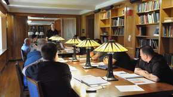

Operation Opportunity is a 501(c)(3) nonprofit organization dedicated
to ensuring educational opportunity for American heroes.
Veterans transitioning to college likely have not used academic skills since high school and have difficulty adjusting to a fundamentally different social and cultural environment.
Unfortunately, these challenges often lead to veterans dropping out of college before earning their degree.
Veterans not only have the potential to succeed in college, but to be leaders in the classroom.
We seek to unlock that potential.Learn more...
Apply now to become a Warrior Scholar
Donate
Volunteer

Slideshow photos by Kimberly Pasko, Yale Office of Public Affairs
The Warrior-Scholar Project is an intensive donor-funded two-week workshop hosted at America's
top universities to help facilitate veterans' transition from the military to college.
Veterans enrolling in the Warrior-Scholar Project attend courses and discussions led by
prominent professors, administrators, and current student-veterans on topics including:
Academic reading and writing
Adapting to changed social circumstances
Translating skills used and acquired in the military to the college environment
Overcoming and embracing many other challenges that are inevitably
confronted by non-traditional college students, especially veterans.
Through the Warrior-Scholar Project, not only do we teach veterans the substantive skills
they will need to succeed in college, but we aim to completely transform the way they
view themselves as students.
Applications are now open for the 2013 Warrior-Scholar Project, which will take place
at Yale University in New Haven, CT from June 2nd - 16th.
Apply now to become a Warrior Scholar
Donate
Volunteer
Donate
Operation Opportunity is a 501(c)(3) nonprofit organization dedicated to ensuring
educational opportunity for American heroes. Contributions are tax-deductible to
the fullest extent of the law.
The Warrior-Scholar Project is an intensive donor-funded two-week workshop hosted
at America's top universities to help facilitate veterans' transition from the military
to college.
Veterans not only have the potential to succeed in college, but to be leaders in the
classroom. We seek to unlock that potential.
Checks can be made out to "Operation Opportunity Foundation" and mailed to:
Operation Opportunity Foundation
4606 Baker Woods Pl
Decatur, IL 62521
Robert A. Lovett Professor of Military and Naval History at Yale University
Darren Gruendel
President of Longevity Alliance; Former Marine
Norma Thompson
Director of Undergraduate Studies for the Humanities at Yale University
Peter Brooks
Harvard Kennedy School of Government, Harvard Business School Joint-Degree Candidate; Former Marine
Michael Fotos
Lecturer in Political Science and Ethics, Politics, and Economics at Yale University; President of Connecticut Farmland Trust
Chris Howell
Eli Whitney Student at Yale University
Nick Rugoff
Consumer Sector Head at Moore Capital
Jesse Reising
Juris Doctor Candidate at Harvard Law School
Management
Jesse Reising
Co-Founder and President
Jesse Reising graduated from Yale University in 2011 as a double-major in
Economics and Political Science and is currently a student at Harvard Law School.
A starting linebacker for Yale, during the 2010 Yale-Harvard football game, Jesse
was involved in a devastating collision that paralyzed part of his right arm and
left him unable to pursue his dream of becoming a Marine. Upon receiving a
nationwide outpouring of support in response to his injury, Jesse and Yale classmates
Nick Rugoff and Chris Howell founded Operation Opportunity in order to redirect that
support toward those now serving in Jesse's place.
Prior to matriculating at Yale, Chris spent just under a decade serving in the
Australian Army. Seven of those years were spent in Special Operations Command,
predominately with the 2nd Commando Regiment. During that period Chris fulfilled
a number of roles. He served in Afghanistan in 2006 with the Special Operations
Task Group and subsequently in the Tactical Assault Group (East), Australia's
domestic counterterrorism and hostage rescue capability. In 2008 Chris transferred
to the reserve special operations unit while he prepared for and later matriculated
at the University of Sydney. After a successful year, Chris applied for and was
admitted to Yale University through the Eli Whitney Students Program - an admissions
program for non-traditional students with unique or extraordinary backgrounds.
Nick Rugoff graduated from Yale University in 2011. He has four years of experience
as a college admissions mentor and tutor, and has helped create a variety of successful
startup non-profits including Eli Africa and New Haven Host Families. His leadership
experience includes time as the Co-Editor in Chief and National Editor of Yale's
undergraduate political journal The Politic, President of leading student investment
group Globalfund, Founder and Head of Cincinnatus Capital Partners, and President of
New Haven Host Families.
Born in the United States and educated in Australia, David graduated from the
University of Sydney with First-Class Honours and the University Medal. A PhD
candidate through the United States Studies Centre at the University of Sydney,
David is concurrently a Predoctoral Fellow in International Security Studies at
Yale University.
As the Director of Studies of Operation Opportunity's Warrior-Scholar Project,
David coordinates the course curriculum in collaboration with the Yale Writing
Center. As part of his role, David established the intensive WSP study method
involving structured, academic, speed-reading and jocularly referred to as Ninja
Reading. In collaboration with the other directors, he provides ongoing support
for the continued education of all Warrior-Scholar graduates.
A Mandarin speaker, David's research interests lie in the foreign and security
policies of his three home countries: China, Australia, and the United States. He
is writing his doctoral dissertation on China's contemporary diplomacy and its
role in the U.S.-led global order.
Zachary Fuhrer graduated from Yale University in 2011 with a Bachelor's degree
in History. In college, Zachary served as an Arts & Living editor for the Yale
Daily News and President of Chabad at Yale, while playwriting and fronting the
band Suitcase of Keys. Outside of school, Fuhrer has worked in media and
communications for Forbes, Universal Republic Records, the Public Theater and
Susan Blond, Inc., and tutored high school students for New York State Regents
exams and the SAT. He will spend the next year pursuing research on mental health
care policy in Brazil, funded by Yale's Gordon Grand Fellowship.
Kallie Parchman is a junior at Yale from Baltimore, MD and is double majoring
in economics and psychology. She is a member of the Yale lacrosse team and
started as a freshman. On campus she is also a mentor for ReadySetLaunch and
is involved in the Student Athlete Advisory Committee, the Kiphuth Leadership
Academy, and Athletes in Action. Her oldest brother, a graduate of the United
States Air Force Academy and First Lieutenant in the U.S. Air Force, has
inspired her to support our military heroes and their families.